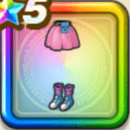

ブルマのワンピース下
攻略班 9.5点 / 転び耐性+5%守備減耐性+10%転び耐性+10%守備減耐性+10%スキルの体技ダメージ+6%右隣のキャラクターのスキルの体技ダメージ+3%スキルHP回復効果+3%
くわしい特徴
【レベル別習得スキル】 Lv1転び耐性+5% Lv8守備減耐性+10% Lv10スキルの体技ダメージ+6% Lv12右隣のキャラクターのスキルの体技ダメージ+3% Lv15スキルHP回復効果+3% Lv20転び耐性+10% Lv23かいふく魔力+5 Lv25守備減耐性+10% 【限界突破スキル】 1凸攻撃力+12 2凸すばやさ+12 3凸守備力+12 4凸さいだいHP+12